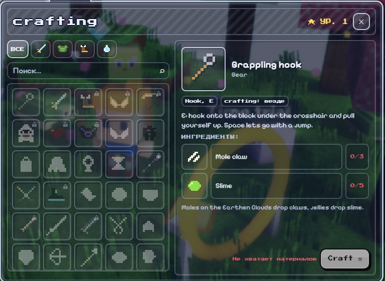

Alpha test // opening soon
LOOT AND
CRAFT
Mobs drop materials. Forge armour,
wings and legendary weapons.
wings and legendary weapons.
32Items
8Relics
12Weapon types

Follow to hear firstStarbreaker: forged in the Star Dome
